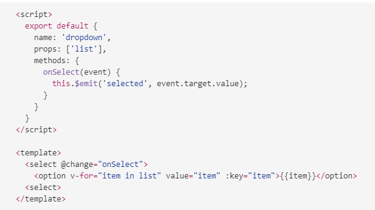
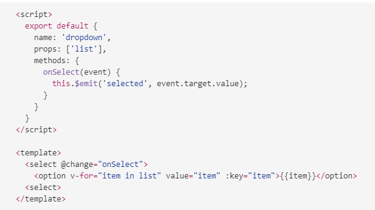

Coding with a Vue
Vad är Vue?
Komponenter

Varför använda Vue?
- Lätt att komma igång och lära sig
- Skalbart
- Snabbt
- Lätt att underhålla
- Testbar kodbas
Single file components
{{ message }}
Data
You clicked {{ clicks }} times!!
Template syntax
{{ message }}
{{ message }}
{{ message }}
{{ item.name }}
Computed property
computed: {
getName() {
return this.message.firstName + ' ' + this.message.lastName;
}
}
Watch property
watch: {
message(value) {
// listen for message updates
}
}
Komponent kommunikation

Props exampel
 

Lifecycle events

Nästa steg
- vue-router
- vue-cli
- vuex